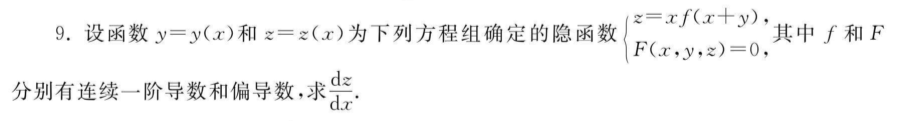

提问

Alice
这个人很懒，什么都没有写。
关于多元函数的偏导
为什么这里对x偏导的时候没有把z也对x偏导啊？(示例）

提问
高等数学
多元函数
评论/回答

Cindy
不会还有人信上帝吧...
为什么这里对x偏导的时候没有把z也对x偏导啊？(示例）
提问
高等数学
多元函数
评论/回答

Bob
怎么睡都睡不醒
这个题需要把z当作独立的变量，也就是暂定它和x没有关系，你用这种思路再想一想。你可以看一下下面的资料：偏导数将导数的概念推广到更高维度。一个多变量函数的偏导数是一个相对于一个变量的导数，所有其他变量视作常数，保持不变。 偏导数可以组合起来，创造出形式更复杂的导数。在向量分析中，Nabla算子( ∇ )依据偏导数被用于定义这些概念：梯度，散度，旋度。在含有偏导数的矩阵中，雅可比矩阵可以用来表示任意维空间之间的函数的导数。因此，导数可理解为从函数定义域到函数值域的逐点变化的线性映射。 含有偏导数的微分方程称为偏微分方程或“PDE”。这些方程较只含有一个变量的常微分方程更难解出。
这个题需要把z当作独立的变量，也就是暂定它和x没有关系，你用这种思路再想一想。你可以看一下下面的资料：偏导数将导数的概念推广到更高维度。一个多变量函数的偏导数是一个相对于一个变量的导数，所有其他变量视作常数，保持不变。 偏导数可以组合起来，创造出形式更复杂的导数。在向量分析中，Nabla算子( ∇ )依据偏导数被用于定义这些概念：梯度，散度，旋度。在含有偏导数的矩阵中，雅可比矩阵可以用来表示任意维空间之间的函数的导数。因此，导数可理解为从函数定义域到函数值域的逐点变化的线性映射。 含有偏导数的微分方程称为偏微分方程或“PDE”。这些方程较只含有一个变量的常微分方程更难解出。